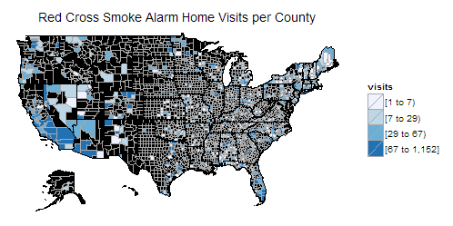
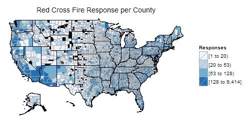
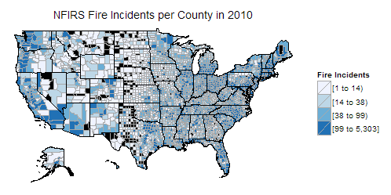
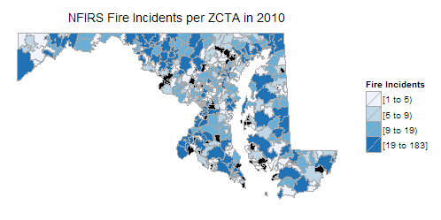

Summary
- This is a write-up for my volunteer Data Science project for the American Red Cross.
- The project used public data to help Red Cross directing limited resources to homes that more vulnerable to fire risk and loss.
- My work in the project:
- Discovered the hidden information in NFIRS dataset, obtained and analyzed 10G NFIRS data.
- Major contribution on model design, implemented NFIRS related predictors.
- Geocoded 18 millions address in NFIRS data with AWS server, Postgresql, PostGIS.
Introduction
In May, 2015 I went to a MeetUp organized by DataKind, where Volunteers came from all kinds of background joined together to help non-profit organizations with Data Science. I joined a project The Effectiveness of Smoke Alarm Installs and Home Fire for the American Red Cross. The Red Cross Smoke Alarm Home Visits is already a very successful campaign, but they were looking forward to the power of data and data science to further improve the project.

The choropleth map of Red Cross Smoke Alarm Home Visits per county in 10 months
Project Goal
Given limited resources and the ambitious project goal, the American Red Cross want to have a priority list for regions backed with data and analysis. The ranking could came from multiple factors, like the possibility of don’t have smoke alarm installed, the risk of catching fire, the possible casualty and losses, maybe even taking the constraints of each Red Cross chapter into consideration.
Similar work from Engima.io
There was a similar project in New Orleans – Smoke Alarm Outreach Program.
They first targeted the areas of least likely to have smoke alarm installed. The American Housing Survey(AHS) provided some data on this in county level, and the American Community Survey(ACS) have more detailed results about many other questions in census block group level. Using the shared questions in these two survey, they were able to build a model to predict smoke alarm presence in block group level, thus same number of home visits could cover more homes without smoke alarms.
Then they studied the areas of most likely to suffer structure fire fatalities. According to NFPA research, very young and very old are most susceptible to fire fatalities. Thus they calculated the fire risk per housing unit according to New Orleans historical data, then added age adjustment based on census population data. With these two factors combined, they ranked the high priority regions for smoke alarm outreach program.
After this New Orleans program, Enigma.io further expanded the acs/ahs method to national level, and produced a visualization website showing risk of lacking smoke alarms on map. They don’t have fire risk data in national level, but provided an API to upload local fire risk data into the model.
More Data Sources
The American Red Cross project is a national level campaign in much larger scale compared to New Orleans project. Red Cross provided the data of their smoke alarm home visits in 10 months and the data of Red Cross disaster response to us for our analysis.

The American Red Cross Diaster response for fire per county
They also got several years National Fire Incident Reporting System (NFIRS) data, listed every fire incident’s time and address. These were the starting point for us to work on.
I found the NFIRS data promising since it is the most complete public data set of fire incidents on national level. After lots of time spending on documents and search, I found this data set is very rich in information, although the problems and challenges are huge too.

The Fire Incidents reported by NFIRS per county in 2010

The Fire Incidents reported by NFIRS per ZCTA of Maryland in 2010
First, the original NFIRS data included many aspects of fire incident, including time, location, fire type, cause of fire, whether there was fire detectors, whether the detectors alerted occupants, the casualty and property losses etc, the list could go on and on. The dataset we got from Red Cross is a compiled version with every address geocoded and verified, which are very useful. However I want to dig more information from the source.
The U.S. Fire Administration website said you can order cd-rom from them for NFIRS data. However I searched and found some direct download links from FEMA. I downloaded all the data I found, from 1999 to 2011. Unfortunately, later I found the data of 2002 ~ 2009 only have about half the states. I guess it’s because the data are excel files and each worksheet in excel can only hold 1 million rows, so the other half states were missing. Fortunately I contacted USFA and they sent the cd-roms of 2005 ~ 2013 to me, now we have 9 years complete and more recent data!
Problems and Challenges
Using NFIRS data is not easy. Their website stressed again and again that you should not just count the incidents, because NFIRS participation is not mandatory at the national level. With about 2/3 of all fire departments participating, it only included about 75% of all reported fires. To make things worse, there is no definitive list of all fire departments and the participating departments. There are some very limited fire department census data, and some fire department data for each year which are not up to date for all the changes in fire departments. How to adjust for this coverage bias is a big challenge.
Another widespread problem is the data quality. There are many columns not filled, data recorded in wrong column and obvious input errors (some years’ data even excluded Puerto Rico entirely because of data quality problems).
Besides, the fire detectors defined by NFIRS including other type of alarms beside smoke alarm. Although there are further break down of detector types, but the valid entries only take 10 ~ 20 % in all home fires records.
In the research on all these problems, I found many analysis methods will need to have the fire incident address geocoded, i.e. verify the address, get the coordinates and map to census block. This is the basis of linking NFIRS data with other data, or doing any geospatial analysis.
Geocoding 18 million addresses
The NFIRS data have 20 million incidents each year. The public data only includes fire incidents, that’s still 2 million each year and I have 9 years of data. Actually we should be only interested in home fires which is a part of all fire incidents, but I think the complete incidents location distribution can help to estimate the NFIRS data coverage, so I still want to geocode all incidents addresses. This geocoding task is impossible for any free online service and too expensive for any paid service. I have to setup a geocoding server by my own.
The data and the software needed are all public and free, though it is definitely not a trivial task. Enigma.io open sourced their geocoding server setup as an ansible playbook, but that’s for Amazon EC2, local linux machine or linux virtual machine. I’m using windows and afraid of the performance limit of virtual machine, so I still need to install everything and setup everything in windows.
After some efforts I got the server running with just 2 states data to test. Then it’s SQL time. With lots of learning, experiments I finally got a working script. The experiments were promising, however I have to move the database out of the SSD drive when I started to download full national data which amount to 100G. With all the data downloaded in regular hard drive, I found the geocoding performance deteriorated seriously, which make the geocoding task very time consuming.
Fortunately I got the generous support of DataKind on their AWS resources, now I can run the geocoding task in Amazon EC2 server. I want to test everything as comprehensive as possible before deploying an expensive EC2 instance, so I decided to do everything with the Amazon EC2 free tier service first. The free tier only allow 30G storage, 1G RAM but I can test with 2 states first.
Now I can use the ansible playbook from Engima. With some tweak I got it running with 2 states data. Surprisly the performance is much better than home pc, even with just 1G RAM. Though I’m not sure if the geocoding peformance will drop again with full national data downloaded.
I further improved my script to make it work with big input file and can work in batch mode. I found I have to use a mix of SQL, plpgsql, shell, python to get a fully batch mode work flow. I’ll write about the geocoding server setup and share my script later. I probably searched hundreds of questions, read hundreds of documentation, and made stackoverflow my most frequent visit site. So it will be a very long post.
My next step is to setup a full scale Amazon EC2 server to geocode all NFIRS data and other possible candidates. With all the address geocoded, we can do lots of things and link to many other data sources, it will be very promising.
Update: Visualizing fire incident by population for each census tract
Update: I have finished the Geocoding and built indicators based on the accurate location of NFIRS events. Here are some sample visualization of the results. You can zoom in and click any census tract for more details.
Reported structured fire incidents per 1000 people for each census tract in Maryland
2009
2010
2011
2012
2013
Version History
- 2015-11-11 : First version.
- 2016-05-10 : Added Summary.
- 2016-05-11 : Added visualization of fire incident per census tract.